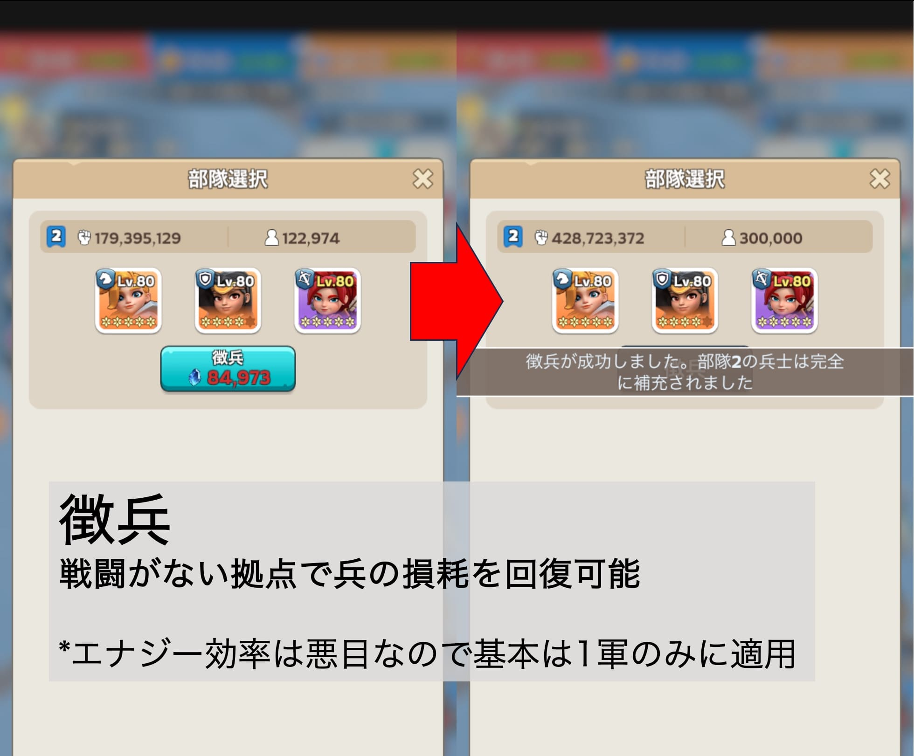
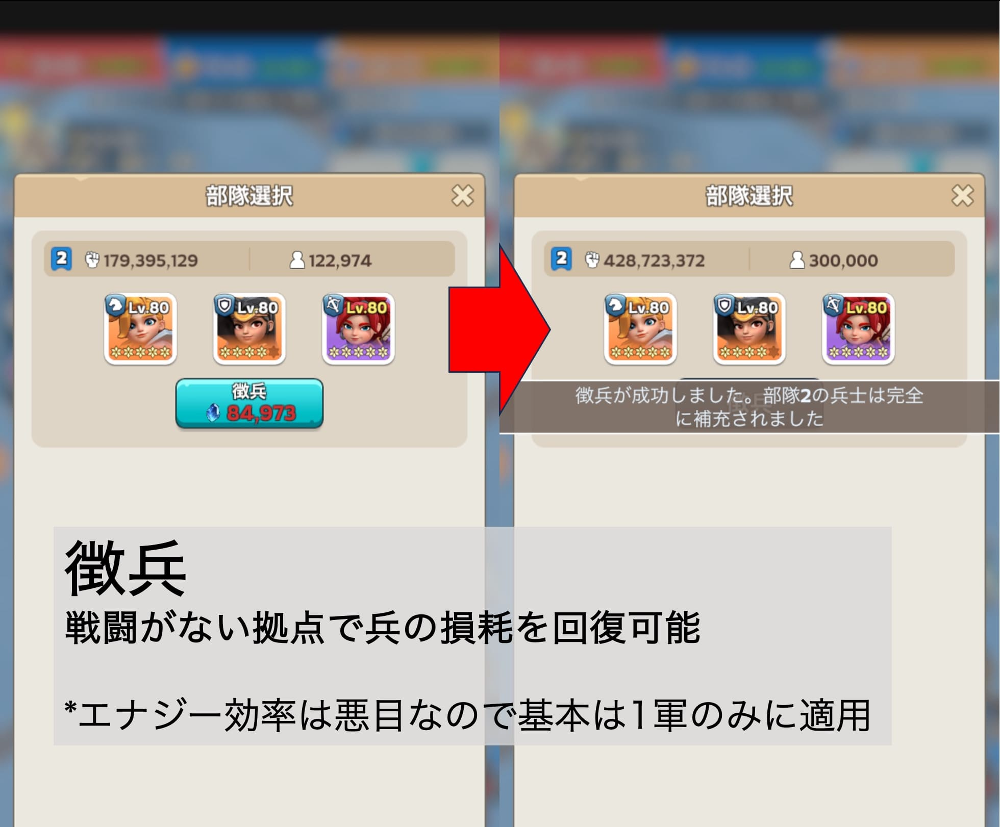

全体マップ

作戦は全部覚えなくてokです！
LEO出身メンバーも完璧ではないです！
楽しむのを第一に、やりながら慣れていきましょうー！
ポイントとしては、
・どの番号の拠点が重要で、どのあたりにあるのか
・フェーズごとの大まかな立ち回り
をインプットできると、動きやすいと思います
まずは「担当分け」と「立ち回り」を確認してみてください！
本番はチャットの確認もお願いします🙏
今回のエントリー人数は30人（max）→敵も同等の人数になる！
・個の強さによる占領の難易度up
┗人数で受け止められるため
・盤面が硬直しやすい
┗敵か味方の全滅で占領状況が切り替わる仕様のため
┗人数が多いと援軍も多く、全滅が起きにくい
・中位以下のメンバーはエナジー切れが起こりやすい
┗役職の数は変わらないため
┗徴兵の使い所に注意
・突撃がやりやすい
→活用の仕方が勝敗を分ける
→防衛時は敵の突撃潰しが重要
・基本的な立ち回りは変更なし
・防衛担当、援護担当を細分しました（担当分け）
・突撃の活用が重要に！
→突撃を活用した援軍遮断術を確認！
3つのフェーズで構成される！
・準備時間：3分
・第１フェーズ：17分（残り時間57分）
・第２フェーズ：20分（残り時間40分）
・第３フェーズ：20分（残り時間20分）
合計：60分


基本：余らせるくらいならガンガン使おう！
・移動
・回復
・戦闘時間短縮（10秒→5秒）
・突撃⭐️重要⭐️
・徴兵
 

＊隊長は攻撃>援護>防衛の順にポイントの多いものに任命！
・ささみさん
・BEYZUさん
・amgさん
余裕がある場合は奪取した重要拠点の防衛
・KIKさん
・がんこちゃん
・けいじさん
・ぺろ山さん
・753@さん
・ビートさん
・ハンマーカンマーさん
・ミヤジーさん
自陣防衛最優先
・ちぃ〜さん
・ぶたまんさん
・やおいかんねさん
・やきとりさん
・酒場さん
・mikasaさん
・シルバニアさん
・バーパパさん
・かつぼーさん
・しおまるさん
・邪威暗さん
・うどんさん（控え）
・BB7さん（控え）
・セイエーさん（控え）
・桜流水さん（控え）
・唐辛子さん（控え）
*参加上限の関係で、控えの方は戦闘開始3分後、人数不足の場合に参加可能です🙇
1, 2フェーズ攻撃援護優先
・しゅ〜さん
・おゆゆさん
・アルス
1, 2フェーズ防衛援護優先
・Kazusan
・猫汁うどんさん
・0し0ゅ0ん0さん
・エスティマちゃん
目標：攻撃対象の29＆21＆13キープ


目標：攻撃対象の24＆29＞21キープ

目標：祭壇速攻→キープ（最終保持狙い）＆ 余裕があれば2, 3軍で29遮断 or 29裏カバー

・祭壇は最終保持で終了後に+50,000pt⭐️重要⭐️
・エナジーはガンガン消費してok！
・第３フェーズ開始時、Aルートが難しそうなら、早めに引いて解放後即Bルート
・要所では戦闘時間短縮もあり
┗祭壇に先行した場合特に！
・終盤は余裕があれば2, 3軍で29遮断 or 29裏カバー
目標：19-13-20、21、29を占領→13、29、21をキープ

目標：24、13、29>21をキープ

目標：24、13、29>21を1, 3軍でキープしつつ、余裕があれば2軍を援護に！

・敵陣には無理に攻め込まなくてok！
・要所を抜かれないことを第一に
・援護が必要な場合早めにチャット→援護担当がサポート
目標：自陣中央の占領→攻撃担当、防衛担当の戦線崩壊阻止＆リカバリー

目標：攻撃担当、防衛担当の戦線崩壊阻止＆リカバリー

目標：3軍で祭壇速攻→キープ ＜ 1, 2軍で29遮断

・攻撃援護：21、13のキープ or 別ルートからの切り込み
・防衛援護：1軍で突撃→敵の増援遮断＆2軍駐屯
・上手と下手の強さ次第で作戦変化
→戦況を見て柔軟に行動
・終盤は29遮断がとにかく重要！
例）28を攻められた場合
敵の狙い：24の占領
防衛方針：
①1軍を28にぶつけてしっかり防衛
┗これで守れたらそれだけでok！
②硬直したら部隊を足して5以上に！
③突撃で27を占領
┗2, 3軍でok！（足止めが目的のため）
┗敵の数が多い場合、援護担当が突撃→猶予が増える
④援軍遮断後28を鎮圧
*また同時に28→24の突撃も未然に防げる
例）29から突撃で30, 31を狙われた場合
敵の狙い：中央祭壇の攻撃
防衛方針：29を絶対に渡さない！！
①すぐに30、31に兵を送って鎮圧
┗余っている兵を事前にここに待機させておいてもok！
②29に援軍で占領維持
例）13が硬直した場合
敵の狙い：13の鎮圧
攻撃方針：
①2, 3軍を集めて13の部隊を5以上に！
②1軍で突撃し、占領地拡大
┗撹乱＆敵の援軍遮断で13も落とせる
③占領後すぐに徴兵
→これでさらに深く進行できる！